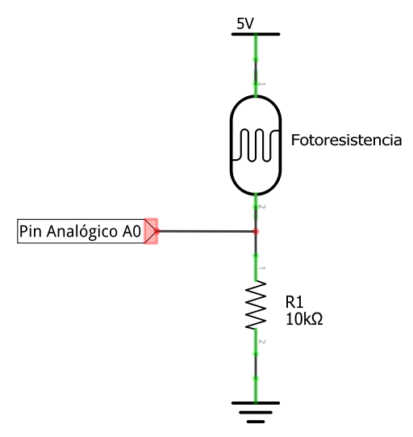

<!DOCTYPE html>
<html lang="es">
<head>
    <meta charset="UTF-8">
    <meta name="viewport" content="width=device-width, initial-scale=1.0">
    <title>Tomo 5: Sensor LDR - Manual de Instrumentación</title>
    <link rel="stylesheet" href="style.css">
    <link rel="stylesheet" href="tomo-style.css">
    <link rel="stylesheet" href="https://cdnjs.cloudflare.com/ajax/libs/highlight.js/11.9.0/styles/arduino-light.min.css">
    <script src="https://cdnjs.cloudflare.com/ajax/libs/highlight.js/11.9.0/highlight.min.js"></script>
<style>
        /* Estilo para que los comandos en el texto aparezcan en rojo y resaltados */
        .tomo-content p code, 
        .tomo-content li code,
        .protagonista-section p code {
            color: #d32f2f; 
            font-size: 1.15em; 
            font-weight: bold;
            background-color: #f1f2f6; 
            padding: 2px 6px;
            border-radius: 4px;
            font-family: monospace;
        }


</head>
<body>
    <header>
        <div class="header-container">
            <h1>Tomo 5: El Ojo de la Noche - El Sensor de Luz LDR</h1>
        </div>
    </header>
    <main class="tomo-content">
        <div class="nav-links">
            <a href="tomo4.html" class="nav-link">&larr; Tomo Anterior</a>
            <a href="index.html" class="nav-link">Índice</a>
            <a href="proyecto-integrador1.html" class="nav-link">Proyecto Integrador 1 &rarr;</a>
        </div>
        <p>¡Hola, creadores! Hoy vamos a darle a nuestro Arduino un sentido parecido a la vista. Le enseñaremos a distinguir entre la luz y la oscuridad usando un componente muy especial llamado Fotoresistencia o LDR. Construiremos un sistema que actúe como las luces automáticas de la calle: cuando se hace de noche, se enciende una luz.</p>

        <div class="protagonista-section">
            <h3>🧠 El Protagonista de Hoy: La Fotoresistencia (LDR)</h3>
            <p>Una <strong>LDR</strong> (Light Dependent Resistor) es una "resistencia que depende de la luz". Es un material que cambia su resistencia eléctrica según la cantidad de luz que recibe.</p>
            <ul>
                <li><strong>Mucha Luz:</strong> Cuando hay mucha luz brillando sobre la LDR, su resistencia es muy baja. Deja pasar la electricidad muy fácilmente.</li>
                <li><strong>Poca Luz (Oscuridad):</strong> Cuando está en la oscuridad, su resistencia es muy alta. Le cuesta mucho a la electricidad pasar a través de ella.</li>
            </ul>
            <div class="image-container">
                
            </div>
            
            <h4>¿Cómo "leemos" la resistencia? El Divisor de Voltaje</h4>
            <p>A diferencia del botón (que es digital y solo nos dice HIGH o LOW), la LDR es un <strong>sensor analógico</strong>. Esto significa que nos entregará una escala continua de valores que va desde <strong>0</strong> (oscuridad total) hasta <strong>1023</strong> (luz brillante). Para escuchar este sensor, utilizaremos las entradas analógicas de nuestro Arduino (A0 a A5) mediante el comando <code>analogRead()</code>.</p>
            <p>Arduino no puede medir resistencia directamente, pero sí puede medir voltaje. Para leer la LDR, la usaremos junto a una resistencia normal (de 10kΩ) para crear un <strong>Divisor de Voltaje</strong>.</p>
            <p>Existen dos formas básicas para la conexión de nuestra LDR, pueden ser utilizadas dependiendo del fin deseado. Si disponemos de un controlador es posible modificar los resultados mediante programación:</p>
            <ul>
                <li><strong>Mayor luz, mayor voltaje:</strong> Al conectar la fotoresistencia al nodo positivo de nuestra fuente de voltaje tendremos que, al incidir una mayor cantidad de luz, provocará una menor caída de voltaje o diferencial de potencial entre la fuente y el pin de referencia (Vout), por lo tanto se tendrá una lectura mayor.</li>
                <li><strong>Mayor luz, menor voltaje:</strong> En pocas palabras la fotoresistencia se conecta al nodo de GND y provocará un comportamiento opuesto al punto 1.</li>
            </ul>

            <h4>Valores comerciales de LDR</h4>
            <p>Las fotorresistencias están disponibles en una amplia gama de sensibilidades y tamaños, adaptándose a distintas aplicaciones. A continuación, se presentan algunos valores típicos:</p>
            <ul>
                <li><strong>Resistencia mínima</strong> (en luz intensa): 500Ω – 5kΩ.</li>
                <li><strong>Resistencia máxima</strong> (en oscuridad): 1MΩ – 10MΩ.</li>
                <li><strong>Rango espectral de sensibilidad:</strong> Usualmente entre 400 nm y 700 nm (luz visible).</li>
            </ul>
        </div>

        <div class="protagonista-section" style="background-color: #fff3e0; border-left-color: #ff9800; margin-top: 15px;">
            <h3>💡 El Gran Dilema: El Umbral Oculto y el Monitor Serial</h3>
            <p>Cuando trabajas con sensores analógicos, el Arduino procesa un flujo constante de números variables. La luz de tu laboratorio en el CECyTEM no es la misma a las 7:00 am que a las 2:00 pm, ni tampoco es igual si el día está nublado. Por lo tanto, el dilema del programador es: <strong>¿Cómo sé qué número está leyendo el Arduino para definir en qué momento empieza la "noche"?</strong></p>
            <p>Para dejar de adivinar, usaremos el <strong>Monitor Serial</strong>. Es una ventana de comunicación entre el Arduino y tu computadora que nos permite imprimir mensajes en la pantalla. Activando el comando <code>Serial.begin(9600);</code> en el setup, podremos usar <code>Serial.println(lecturaLuz);</code> dentro del loop para ver los números exactos en nuestra pantalla. Una vez que sepamos cuánto mide la oscuridad en nuestra mesa, podremos fijar un Umbral matemático mediante un <code>if</code>.</p>
        </div>

        <h2>🔌 El Circuito: La Lámpara Nocturna Automática</h2>
        <h3>Componentes Necesarios:</h3>
        <ul>
            <li>1 Placa Arduino UNO y Protoboard</li>
            <li>1 Fotoresistencia (LDR)</li>
            <li>1 Resistencia de 10kΩ (¡importante este valor!)</li>
            <li>1 LED (el que será nuestra lámpara nocturna)</li>
            <li>1 Resistencia de 220Ω (para proteger el LED)</li>
            <li>Cables Jumper</li>
        </ul>
        
        <h3>📝 Instrucciones de Conexión:</h3>
        <ol>
            <li><strong>Monta el Divisor de Voltaje:</strong>
                <ul>
                    <li>Conecta un cable desde el pin 5V del Arduino a una fila de la protoboard.</li>
                    <li>En esa misma fila, conecta una pata de la LDR.</li>
                    <li>Conecta la otra pata de la LDR a una fila vacía.</li>
                    <li><strong>¡El punto clave!</strong> En esa misma fila donde terminó la LDR, conecta dos cosas:
                        <br>1. Un cable que vaya al pin Analógico <strong>A0</strong> de Arduino. ¡Este es el punto que vamos a "leer"!
                        <br>2. Una pata de la resistencia de 10kΩ.
                    </li>
                    <li>Conecta la otra pata de la resistencia de 10kΩ a GND.</li>
                </ul>
            </li>
            <li><strong>Conecta el LED (la lámpara):</strong>
                <ul>
                    <li>Conecta la pata corta (-) del LED a GND.</li>
                    <li>Conecta la resistencia de 220Ω a la pata larga (+) del LED.</li>
                    <li>El otro extremo de la resistencia conéctalo al Pin 9 de tu Arduino.</li>
                </ul>
            </li>
        </ol>

        <div class="image-container">
            <h3>⚡ Diagrama de armado</h3>
            
        </div>

        <h2>🧠 El Código: Decidiendo si es de Noche</h2>
        <p>Leeremos el valor del pin A0. Si el valor es muy bajo (poca luz -> alta resistencia de la LDR -> bajo voltaje en A0), significa que está oscuro, ¡y encenderemos el LED!</p>
        
        <div class="code-container"> 
    <div class="code-header">
        <span>Código Arduino</span>
        <button class="copy-btn">Copiar</button>
    </div> 
<pre><code class="language-cpp code-block">
/*
 * Misión 05: El Ojo de la Noche
 * Descripción: Enciende un LED automáticamente cuando no hay luz.
 * Por: Profe Campos
 * CECyTEM 05 Guacamayas
*/

// --- ZONA DE CONFIGURACIÓN ---
int pinLdr = A0;   // Pin ANALÓGICO donde leemos el sensor de luz.
int pinLed = 9;    // Pin donde está nuestra lámpara nocturna.

int valorLuz = 0;          // Variable para guardar la lectura del sensor (0-1023).
int umbralOscuridad = 400; // ¡Este es nuestro número mágico!
// Define qué tan oscuro debe estar para encender la luz.
// Tendrás que experimentar para encontrar el valor perfecto.

void setup() {
  Serial.begin(9600);      // Iniciamos el monitor para ver los valores.
  pinMode(pinLed, OUTPUT); // Configuramos el pin del LED como SALIDA.
}

void loop() {
  // 1. LEEMOS el valor analógico del sensor.
  // analogRead() nos da un número entre 0 (muy oscuro) y 1023 (mucha luz).
  valorLuz = analogRead(pinLdr);

  // 2. Mostramos el valor en el Monitor Serial.
  // ¡Esto es súper útil para encontrar nuestro 'umbralOscuridad'!
  Serial.print("Valor de luz: ");
  Serial.println(valorLuz);

  // 3. TOMAMOS UNA DECISIÓN.
  if (valorLuz < umbralOscuridad) {
    // Si el valor de luz es MENOR que nuestro umbral...
    // ...significa que está oscuro, ¡encendemos la lámpara!
    digitalWrite(pinLed, HIGH);
  } else {
    // Si no...
    // ...hay suficiente luz, la lámpara se apaga.
    digitalWrite(pinLed, LOW);
  }

  delay(200); // Pequeña pausa para estabilizar la lectura.
}
</code></pre>
</div>

        <h2>🚀 ¡Inténtalo Tú Mismo! (Retos)</h2>
        <ul>
            <li><strong>Luz de Emergencia Inversa:</strong> ¿Puedes hacer que el LED se encienda cuando haya MUCHA luz? (Como una alarma que te avisa si alguien enciende la luz de tu cuarto en la noche).</li>
            <li><strong>Luz Regulable:</strong> Añade otros 2 LEDs. ¿Puedes hacer que se encienda solo un LED si está un poco oscuro, dos si está más oscuro, y los tres si está en total oscuridad? (Pista: necesitarás usar <code>if</code> / <code>else if</code> / <code>else</code>).</li>
        </ul>

        <div class="nav-links bottom-nav-links">
             <a href="tomo4.html" class="nav-link">&larr; Tomo Anterior</a>
            <a href="index.html" class="nav-link">Índice</a>
            <a href="proyecto-integrador1.html" class="nav-link">Proyecto Integrador 1 &rarr;</a>
        </div>
    </main>
    <footer>
        <p>Manual Digital de Instrumentación Industrial | CECyTEM 05 Guacamayas</p>
    </footer>
    <script>hljs.highlightAll();</script>
<script>
document.addEventListener('DOMContentLoaded', function() {
    // Busca todos los botones de copiar
    const allCopyButtons = document.querySelectorAll('.copy-btn');

    allCopyButtons.forEach(button => {
        button.addEventListener('click', function() {
            // Encuentra el contenedor de código más cercano
            const codeContainer = this.closest('.code-container');
            // Encuentra el bloque de código dentro de ese contenedor
            const codeBlock = codeContainer.querySelector('code');
            
            if (codeBlock) {
                // Copia el texto del código al portapapeles
                navigator.clipboard.writeText(codeBlock.innerText).then(() => {
                    // Feedback visual para el usuario
                    this.innerText = '¡Copiado!';
                    setTimeout(() => {
                        this.innerText = 'Copiar';
                    }, 2000); // Vuelve al texto original después de 2 segundos
                }).catch(err => {
                    console.error('Error al copiar el código: ', err);
                });
            }
        });
    });
});
</script>
</body>
</html>
